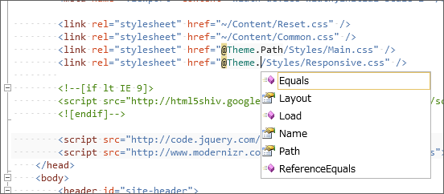

WebMatrix + ASP.NET Web Pages でキレイにコーディングしたい（5）
公開日：
けれど、これだと IntelliSense の助けが得られないな。無理して App に Theme 関連の変数や関数が属すようにせず、 Static な Theme クラスを作って、そっちで管理するほうがいいかもしれない。
さっそくやってみた。
まず、 App_Code フォルダに Theme.cs を作成して、以下のようにコーディング。前回のと内容的には殆ど変わらない。
using System.Web;public static class Theme { const string ThemeBaseDir = "~/Themes/"; const string ThemeLayoutFile = "_Layout.cshtml";
public static void Load(string name) { Name = name; }
public static string Name { get; private set; }
public static string Path { get { return VirtualPathUtility.ToAbsolute( System.IO.Path.Combine(ThemeBaseDir, Name) ); } }
public static string Layout { get { return VirtualPathUtility.ToAbsolute( System.IO.Path.Combine(ThemeBaseDir, Name, ThemeLayoutFile) ); } } }
“_AppStart.cshtml”も書き換えておく。
@{
// App.Theme = "Default";
Theme.Load("Default");
}
最初は Theme.Name を public にして Theme.Name = "Default" みたいな感じで使うようにしていたけれど、 Theme.Load() の方が意図が明確になると思った。
さてはて、レイアウトファイルの方も書き換えよう。
<link rel="stylesheet" href="~/Content/Reset.css" /> <link rel="stylesheet" href="~/Content/Common.css" /> <!-- <link rel="stylesheet" href="@App.GetThemePath()/Styles/Main.css" /> --> <link rel="stylesheet" href="@Theme.Path/Styles/Main.css" />

dynamic 型にしたら入力補完されないけれど、ちゃんとクラスにしたら……ほら！ クラスの責務も明確になるし、断然こっちのほうがいいなと自己満足した。